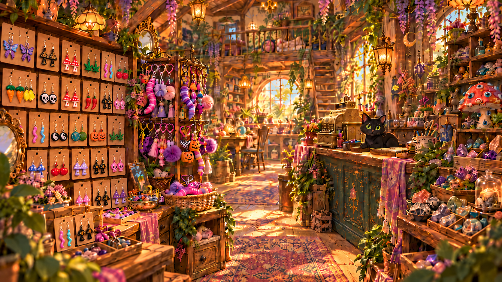

The Oddity Orchard ✿
The Orchard
The Gallery
Inside the Shop

← Back to the Orchard
Browse the Treasures ↓
Handmade with a little whimsy
Treasures from the Nook
Curious creations, little oddities, and handmade treasures waiting to be discovered.
All
Earrings
Keychains
Other Finds
×